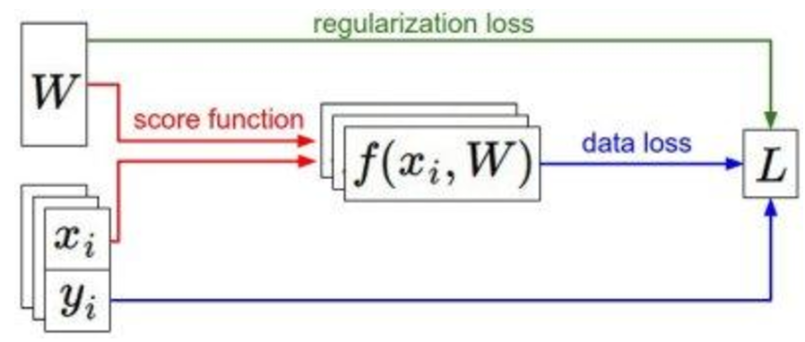

Overview
In any machine learning method, the model is the mathematical function that maps data into class label values. In a standard classification problem, this would be some function that takes a dataset of points and assigns to each some class scores based on a set of parameters. In the parametric classifier case, the model always takes the form
Where xiis a datapoint in D+1 dimensions, it is a datapoint from our set with a [1] concatenated to the front. We define our points in this way for notational simplicity. Correspondingly, our w vector is also a D+1 dimensional vector. f is some function that maps to the class label values.
We need a loss function, or error function, to measure the quality of a particular set of parameters. In the parametric model case, this is either the mean-squared error, cross-entropy error, or some similar function with the form.
Specifically, this function is a sum, across all points, of some comparison function, C which compares, for one point, our model output and the true label.
Often as we train a model, we find that the parameters that minimize the error on our training set might do poorly on a different set generated by the same pattern. The condition of a high training accuracy, or equivalently a low training error, coupled with a high testing loss, or high loss on a previously unseen set of data, is called overfit. Overfitting occurs when the algorithm has stopped learning the underlying pattern that generated the data, and is instead learning the accidental random permutations of the data, called noise. Often, learning the noise of a dataset can produce a huge improvement in loss. Because overfitting occurs so naturally, we must often add an additional set of regularization terms that prevent it.
The optimization or objective function is a compound function of the training loss and regularization terms. The regularization terms are usually functions of the weights that are NOT dependent on the data points, and so we can directly differentiate these terms with respect to the weights. In almost all supervised learning cases, the objective function has the form:
Where R is usually a simple function of the weights directly, that when minimized, keeps the weight vector from overfitting.
